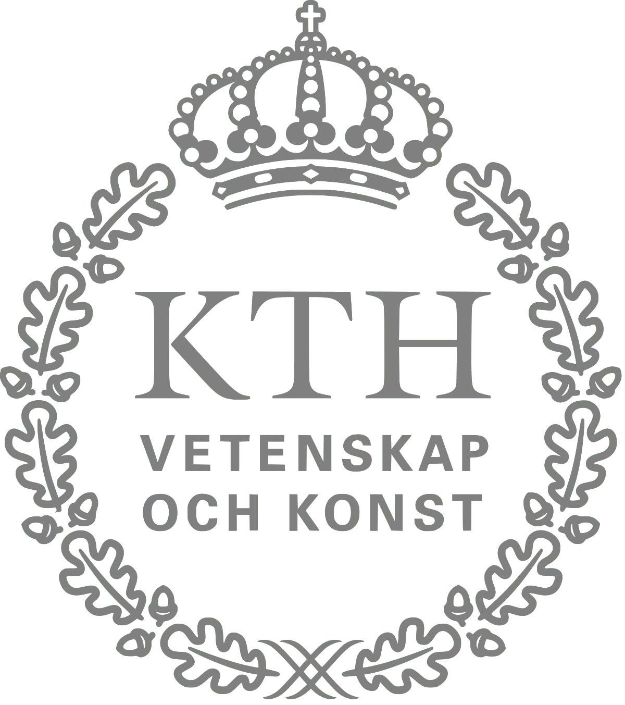
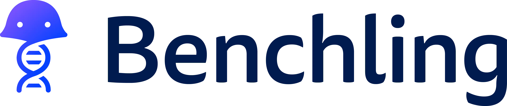
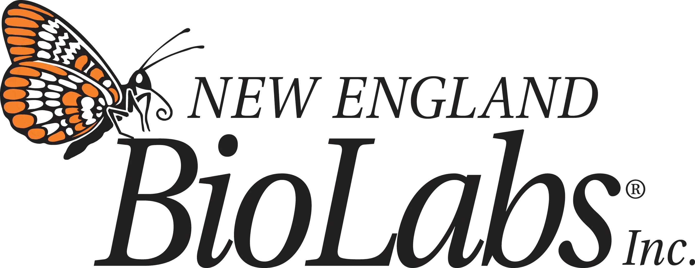
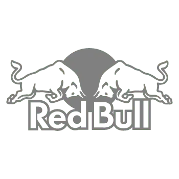

Sponsors
How shall we get financial support with a pandemic during iGEM 2020? This central question followed us at the back of our minds during the last months. We iGEM Stockholm 2020 had to change some of our tactics to accomplish our aims.
Especially from a financial perspective, we faced some issues. Long-time investors could not support this year's iGEM Stockholm team anymore. We sent newsletters and the following sponsor request to companies in research, but also non-scientific related companies including cafes and shops. However, this phase was not successful. Regarding the current restrictions in physical meetings, we couldn't drop into companies, and meetings were not possible. Hence, it was difficult to convince potential sponsors to financially support our project. Therefore, most of the companies showed no interest.
We also applied for many grants at our partner universities. Luckily the universities showed empathy and understood our situation. For instance, grants that were supposed for traveling in the first place, allowed us to pay the registration fee instead. However, as many events have unfortunately been canceled, this constricted our budget. This pandemic has taught us to bend our ways and be creative to achieve our goals.
Since our whole project relay on sponsors, we are very thankful that our partner universities supported us financially during iGEM 2020. Therefore, a special thanks to all our sponsors who believed in our idea during these difficult times.
Academic
KTH Royal Institute of Technology
KTH Royal Institute of Technology's focus on and support for biological research has led to the institution playing several significant roles in the success of iGEM Stockholm. First and foremost, KTH is the primary financial support of the iGEM Stockholm Team. We rely on the advice, expertise, and support of the KTH Royal Institute of Technology staff. KTH also allowed us to use a research lab for the summer and provided us with the basic equipment and materials to do experimental work. 1
KTH Opportunities fund
KTH Opportunities fund offers scholarships to KTH students who are involved in projects, internships, and research. The project shall have an impact on innovation, sustainability, equality, and interdisciplinary collaborations. The aim is to affect KTH and the students positively through sponsored ideas.
KI Innovations

KI Innovations validate and evaluate customers' ideas and offer education, resources, financing, and help with business-relevant inquiries in particular for start-ups. This subsidiary of Karolinska Institutet's holding company helps interested people to build skills and inspire. 2
PN Biomedicine Grant
PN Biomedicine Grant supports projects with a benefit for students especially students belonging to the biomedical student section (BUS) at Karolinska Institutet. Students shall get inspired and stimulated with the passion of the scholarship winners through any kind of interaction. 3
Corporate
Benchling
Benchling is an iGEM 2020 partner sponsor, and has kindly provided access to their cloud-based platform allowing for collaborative lab documentation and sequence design within our team. 4
Integrated DNA Technologies

Integrated DNA Technologies, a platinum iGEM 2020 partner sponsor, has generously provided our and other iGEM teams with 20 kB of DNA oligonucleotides. IDT is a provider of custom nucleic acid sequences and products for research and diagnostic life science markets. 5
New England Biolabs
New England Biolabs, an iGEM 2020 gold sponsor, kindly supported our team with laboratory material and reagents essential for DNA purification and restriction cloning. NEB specializes in the discovery and production of enzymes for molecular biology applications. 6
Red Bull
Red Bull supported our team with in-kind sponsors which boosted our energy resources. Red Bull has a strong interest in sustainability which involves dealing with packaging and can, and on reducing emissions and energy. 7
SnapGene

SnapGene, an iGEM 2020 partner sponsor, kindly provided licenses to their platform enabling our lab team members to design, visualize and simulate DNA manipulations in silico. The company offers a molecular cloning software tool allowing for the planning, visualization and documentation of everyday molecular biology procedures. 8